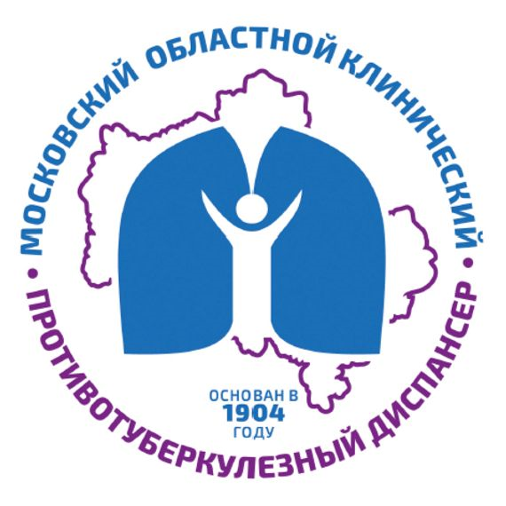

Балашихинский филиал ГБУЗ МО «МОКПТД»
Как добраться до стационара
д. Павлино, вл. 65
🚇🚌 Вариант 1: Метро + автобус (самый удобный)
Подходит для: тех, кто едет из Москвы и не хочет разбираться с электричками.
От метро «Новокосино»:
- 1. Выходите из последнего вагона из центра, поднимаетесь на улицу.
- 2. Ищете остановку автобусов. Вам нужен любой автобус, который идет до Павлино: № 111, 111к, 706.
- 3. Едете до остановки «Поворот на Павлино».
- 4. Выходите — перед вами будет поворот на Павлино. Идете пешком прямо около 10–15 минут вдоль дороги до владения 65. Больница будет с левой стороны.
От метро «Новогиреево»:
- 1. Садитесь на автобус № 15к или 102к.
- 2. Едете до остановки «Поворот на Павлино».
- 3. Дальше — пешком 10–15 минут.
От метро «Щелковская»:
- 1. Подойдут автобусы № 395, 396, 447, 735.
- 2. Выходите на остановке «Поворот на Павлино».
- 3. Дальше пешком.
🚂🚌 Вариант 2: Электричка до станции «Железнодорожная» + автобус
Подходит для: тех, кто живет ближе к Горьковскому направлению или едет из области.
- 1. С Курского вокзала или станции метро «Авиамоторная» садитесь на электричку в сторону «Железнодорожной».
- 2. Выходите на станции «Железнодорожная». Ехать около 25–30 минут от Москвы.
- 3. На привокзальной площади ищете остановку автобусов. Вам нужен автобус № 23 или 26.
- 4. Едете до остановки «Павлино».
- 5. Выходите — больница рядом.
Остановки и ориентиры
- Остановка «Поворот на Павлино» — отсюда идти пешком 10–15 минут.
- Остановка «Павлино» — конечная автобусов № 23 и 26. Рядом с больницей.
- Ориентир для такси: «Противотуберкулезный диспансер в Павлино».
Контакты
- Дежурный врач: +7 (985) 860-92-96
- Регистратура: +7 (495) 527-62-68
Важно
Явиться для госпитализации до 14:00